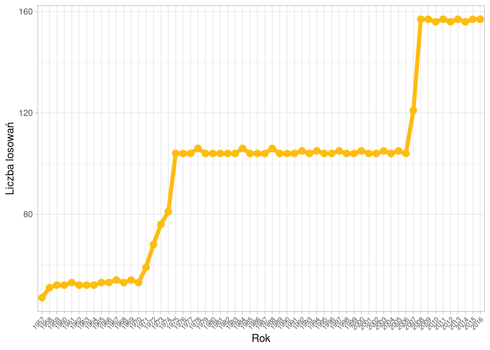
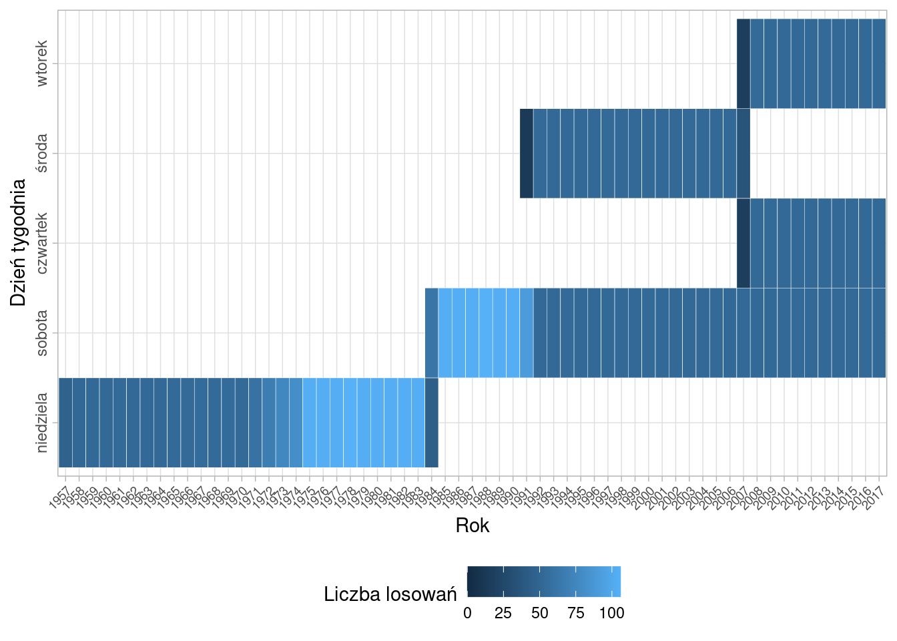

library(ggplot2)
library(dplyr)
library(tidyr)
library(zoo)
d <- read.table("http://www.mbnet.com.pl/dl.txt", sep=" ", dec=".")
names(d) <- c("obs", "date", "numbers")
d <- d %>%
separate(numbers, into = c("number1", "number2", "number3", "number4", "number5", "number6")) %>%
separate(date, into = c("day", "month", "year"), remove = F) %>%
mutate(date_f=as.POSIXct(strptime(date, "%d.%m.%Y"))) %>%
filter(year<2018)Impulsem do przeprowadzenia analizy danych pochodzących z losowań Lotto była konieczność przedstawienia uczniom liceum przykładu losowania prostego. Czy faktycznie każda liczba ma takie samo prawdopodobieństwo wylosowania?
Lotto, dawniej Toto-Lotek oraz Duży Lotek to losowanie 6 liczb z 49. Dużo ciekawych informacji na temat samej gry oraz jej historii można znaleźć na stronie wikipedii.
Dane w formacie tekstowym można pobrać ze strony mbnet.com.pl. Po wczytaniu do R dokonałem niezbędnego przekształcenia danych.
Do końca 2017 roku przeprowadzono 6041 losowań. Żadna sekwencja liczb się nie powtórzyła.
W pierwszej kolejności sprawdźmy ile razy dana liczba została już wylosowana.
freqs <- d %>%
select(starts_with("number")) %>%
gather(number, value) %>%
mutate(value=as.numeric(value))
counts_num <- freqs %>%
count(value)
ggplot(counts_num, aes(x=as.factor(value), n)) +
geom_bar(stat="identity", fill="#FCBD10") +
xlab("Liczba") + ylab("Częstość") +
theme_light() +
theme(axis.text.x = element_text(size = 7))
Okazuje się, że rozkład liczb losowanych w Lotto jest zbliżony do rozkładu jednostajnego. Najrzadziej losowana była liczba 43 - 667 razy, a najczęściej liczba 34 - 807 razy.
Z kolei do przedstawienia rozkładu liczb na poszczególnych pozycjach najlepiej sprawdzi się wykres skrzypcowy - połączenie wykresu pudełkowego z rozkładem gęstości.
ggplot(freqs, aes(x=number, y=value)) +
geom_violin(fill="#FCBD10") +
xlab("Pozycja liczby") + ylab("Wylosowana liczba") +
scale_x_discrete(labels = 1:6) +
theme_light()
Rozkład liczb według pozycji nie zaskakuje. Na pierwszym miejscu dominują liczby z początku przedziału [1;49], a na miejscu 6 z końca tego przedziału. Niemniej jednak zdarzyły się takie losowania, jak to z 15 października 2015 roku, w którym padły liczby wyłącznie z czwartej dziesiątki: 40, 41, 42, 46, 47, 49. Z drugiej strony można przywołać 5 grudnia 1987 roku i wylosowane liczby: 1, 2, 8, 10, 11, 12.
Dane z losowań Lotto pokazują także jak zmieniała się liczba losowań w ciągu ostatnich 60 lat.
draw_y <- d %>%
filter(year!="2017") %>%
group_by(year) %>%
count()
ggplot(draw_y, aes(x=year, y=n, group = 1)) +
geom_line(color="#FCBD10", size=2) +
geom_point(color="#FCBD10", size=3) +
xlab("Rok") + ylab("Liczba losowań") +
theme_light() +
theme(axis.text.x = element_text(angle = 45, hjust = 1, size = 7))
W latach 1957-1974 losowania odbywały się raz w tygodniu. Od 1975 wprowadzono drugie losowanie, a w roku 2007 trzecie.
Na podstawie tych samych danych można jeszcze sprawdzić w jakie dni tygodnia odbywały się te losowania.
week_d <- d %>%
mutate(weekday=weekdays(date_f)) %>%
group_by(year, weekday) %>%
count() %>%
ungroup() %>%
mutate(weekday=ordered(weekday,
levels=rev(c("wtorek", "środa", "czwartek", "sobota", "niedziela")),
labels=rev(c("wtorek", "środa", "czwartek", "sobota", "niedziela"))))
ggplot(week_d, aes(year, weekday)) +
geom_tile(aes(fill = n), colour = "white") +
# geom_text(aes(label = n), size=3, color = "white") +
scale_fill_gradient("Liczba losowań", limits=c(0,max(week_d$n))) +
xlab("Rok") + ylab("Dzień tygodnia") +
theme_light() +
theme(axis.text.x = element_text(angle = 45, hjust = 1, size = 7),
axis.text.y = element_text(angle = 90, hjust = 0.5),
legend.position="bottom")
W pierwszych latach losowania były przeprowadzane w niedzielę. W 1984 roku przeniesiono je na sobotę, a w 1991 roku dodano losowane środowe. Od 2007 roku losowania Lotto odbywają się we wtorki, czwartki i soboty.
Podobne zestawienie można utworzyć dla dni i miesięcy.
draw_dm <- d %>%
group_by(month, day) %>%
count()
ggplot(draw_dm, aes(day, month)) +
geom_tile(aes(fill = n), colour = "white") +
geom_text(aes(label = n), size=3, color = "white") +
scale_fill_gradient("Liczba losowań", limits=c(0,max(draw_dm$n))) +
xlab("Dzień") + ylab("Miesiąc") +
theme_light() +
theme(legend.position="bottom")
W tym przypadku bez niespodzianek - żadna data nie była dyskryminowana. Oprócz 29 lutego - w ciągu 60 lat w ten dzień odbyły się tylko 3 losowania.
Szansa trafienia “szóstki” w Lotto to 1 do 13 983 816 czyli bardzo mało. Z wykorzystaniem analizy częstości można wytypować najczęściej losowane “dwójki” czy “trójki”, ale należy pamiętać, że wylosowanie każdej kombinacji liczb jest tak samo prawdopodobne. Ciekawie na ten temat mówi Dan Gilbert w prezentacji Dlaczego podejmujemy złe decyzje.
Kod w jednym kawałku dostępny jest na githubie.